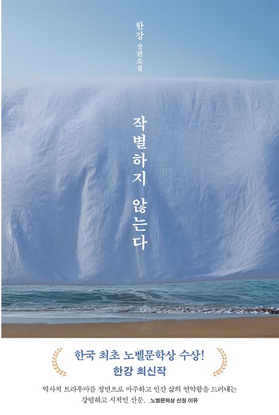

지난해 우리나라 성인 10명 가운데 6명 정도는
1년 동안 책을 단 한 권도 읽지 않은 것으로 나타났습니다.
문화체육관광부가 발표한 ‘2023 국민 독서실태조사’ 자료를 보면,
우리나라 성인의 연간 종합독서량은 3.9권으로 전 조사가 이뤄진 2021년보다 0.6권 줄었습니다.
2023 국민 독서 실태 조사
1년간 책을 한 번 이라도 읽어본 적이 있나요?
성인의 평균 독서 시간은 평일 18.5분, 휴일 25.0분이었고, 도서
구입량은 종이책이 1.0권, 전자책은 1.2권이었습니다.
전자책이 많이 보급되었음에도,
책을 접하기 쉬워졌음에도 불구하고 상당히 낮은 수치를
기록하고 있죠.
그런데 최근, 주목할만한 수치가 나타납니다
도대체 무슨 일이 일어난 것일까요?
“역사적 트라우마를 마주 보고
인간 삶의 연약함을 드러내는 강렬한 시적 산문”
-스웨덴 한림원
뉴스는 봤는데.. 어떤 작가더라?
아까 했던 말, 기억하시나요?
“역사적 트라우마를 마주 보고 인간 삶의 연약함을 드러내는 강렬한 시적
산문”
노벨상 수상자를 결정하는 스웨덴 한림원은 한강 작가의 작품에 대하여 이와
같이 말을 하며 그녀를 올해 문학상의 주인공으로 발표했어요.
이 말이 어떤 의미냐구요?
“역사적 트라우마를 마주 보고 인간
삶의 연약함을 드러내는 강렬한 시적 산문”
한강 작가는 우리 현대사의 비극을 꾸준히 탐구해왔어요.
5.18 민주화운동 당시 학살 사건을 다룬 소설 ‘소년이 온다’와 제주 4.3
사건을 배경으로 한 ‘작별하지 않는다’가 대표적이에요.
“역사적 트라우마를 마주 보고
인간 삶의 연약함을 드러내는 강렬한
시적 산문”
‘폭력’과 ‘인간성’은 한강 작가의 작품을 관통하는 중요한 테마예요.
대표작인 ‘채식주의자’는 육식과 가부장제로 상징되는 폭력 앞에 놓인 인간의
취약한 모습을 섬세하게 그린 소설이고요.
2016년, 한강 작가는 이 작품으로 노벨문학상과 더불어 세계 3대 문학상 중
하나로 꼽히는 맨부커상을 받기도 했어요.
“역사적 트라우마를 마주 보고 인간 삶의 연약함을 드러내는
강렬한 시적 산문”
최근에는 소설가로 더 잘 알려졌지만, 사실 한강 작가는 ‘서울의 겨울’
등의 시로 처음 문단에 발을 들였어요.
‘서랍에 저녁을 넣어 두었다’라는 제목의 시집을 발표하기도 했고요.
그래서, 어떤 책부터 읽어보아야 할까요?
작가님의 대표작, 무엇이 있을까요?
여기 간단하게 정리해봤어요!
책 제목
여기에 책 설명이 표시됩니다.

읽어 보고는 싶은데, 다 품절이래요ㅠㅠ
맞아요. 노벨문학상은 후보 목록을 철저히 비밀에 부치는 데다, 올해 한강
작가가 상을 받을 거라고 누구도 예상하지 못했는데요,
노벨문학상 수상자가 발표되자마자, 한 작가의 작품은 대부분의 온·오프라인
서점에서 동났어요. 출판사들은 부랴부랴 책을 더 찍어내고 있다고.
출판업계는 이번 수상 소식으로 그동안 가라앉아 있던 출판 시장에 활기가
돌기를 기대하고 있어요.
주문한 책을 기다리면서 볼 콘텐츠는 없을까?
그럴 줄 알고 방송 프로그램부터 음악까지, 한강 작가의 작품 세계를
더 깊이 이해하기 위해 함께 보면 좋을 콘텐츠를 싹 모아왔어요:
KBS 노벨문학상 수상 특집 다큐멘터리 ‘한강’ 📺:
한강 작가의 삶을 톺아보고,
그의 작품 세계를 국내외 문학평론가와 출판계, 독자 등 다양한 시각에서
분석하는 다큐멘터리 프로그램이에요. 13일 오후 7시 10분 KBS1에서
방송됐어요.
한강 작가 관련 콘텐츠 💻:
EBS는 한강 작가에 관한 다양한 영상 콘텐츠를 올해 12월 31일까지
무료로 공개해요. 한강 작가의 작품을 소개한 강의나 교양
프로그램부터 그가 출연한 북콘서트 영상까지 만나볼 수 있어요.
AKMU ‘어떻게 이별까지 사랑하겠어, 널 사랑하는 거지’ 🎵:
2019년 발매된 이 노래는 며칠 전부터 국내 음원 차트에서 ‘역주행’을
시작했는데요. 한강 작가가 ‘작별하지 않는다’를 쓸 때 듣고 눈물을
흘린 곡이라고 소개했거든요. 특히 그에게 와닿은 구절은 노래의 마지막
부분인 “어떻게 내가 / 어떻게 너를 / 이후에 우리 바다처럼 깊은 사랑이 /
다 마를 때까지 기다리는 게 이별일 텐데”였다고.